fabuła jest prosta i liniowa, nawiązująca do cthulhu; oferuje mniej niż cordona (sherlock holmes chapter one) jako że misje poboczne są nieliczne; zakończenie jest nieco rozczarowujące, acz pasujące do ogólnej atmosfery; jest to remake albo remaster innej gry o tym samym tytule; żadnej innowacji czy ewolucji; nawet strzelanie zostało ograniczone do watsona;
jest to remake/remaster innej gry o tym samym tytule;
“A full remake of the game featuring a substantially rewritten script was developed by Frogwares and launched on Microsoft Windows, Nintendo Switch, PlayStation 4, PlayStation 5, Xbox One, and Xbox Series X/S in April 2023. The remastered version allows for gameplay in a third-person perspective, similar to other Frogwares titles, such as Sherlock Holmes: Secret of the Silver Earring and Dracula: Origin. Other new features included a host of quality of life improvements and fully redone assets.”
gra oferuje 8 rozdziałów, przechodzimy przez półotwarte lokacje z jedną dodatkową misją poboczną dla każdej; jeżeli nie wykonuje się ich na bieżąco, to nie będzie można do nich powrócić;
istnieje kilka nawiązań do „sherlock holmes chapter one”;
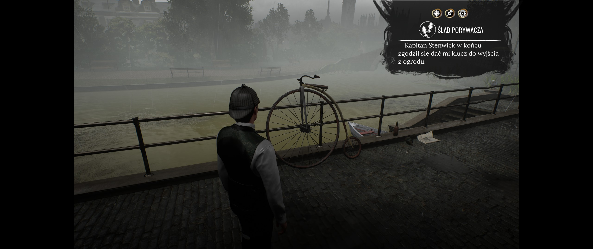
bicykl, relikt dawnej ery
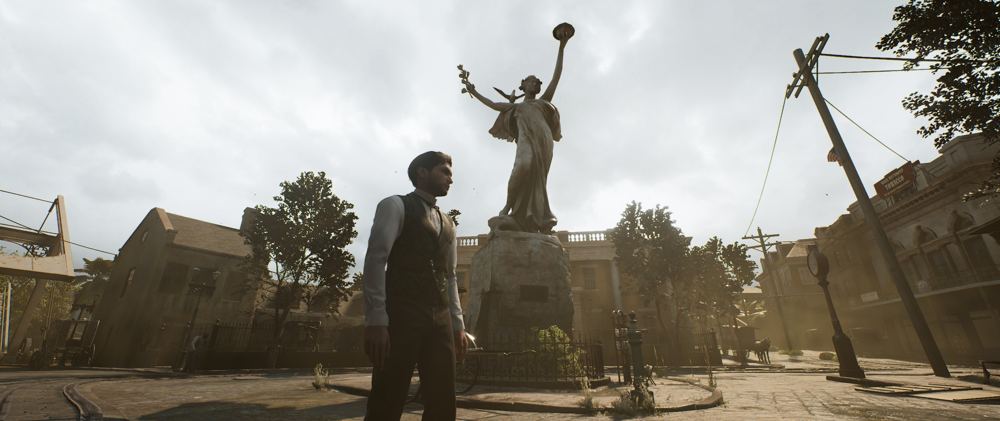
nowoorleański pomnik
elementy fantastyczne są związane wyłącznie z cthulhu; element komediowy występuje tylko jeden w szpitalu psychiatrycznym; ewentualnie, tu i ówdzie, można doszukiwać się subtelnego humoru; poza tym opowiadanie skupia się na szaleństwie kultystów i lęku przed powoli traconą poczytalnością;
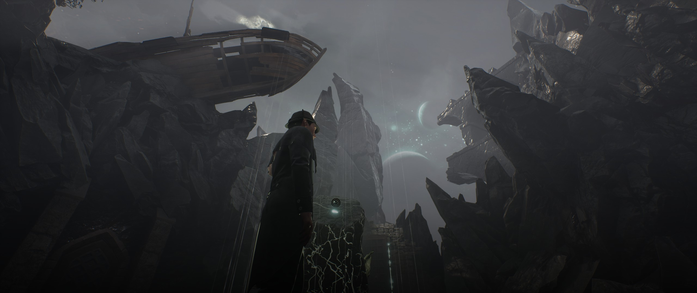
świat paranormalny – wrak statku
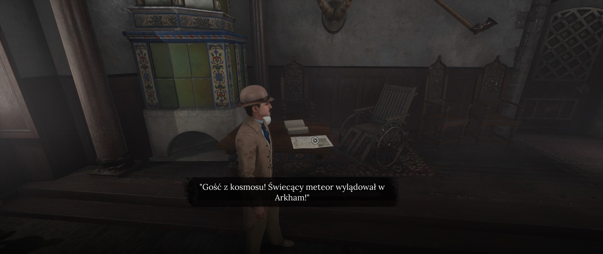
nawiązanie do batmana w szpitalu do umysłowo chorych
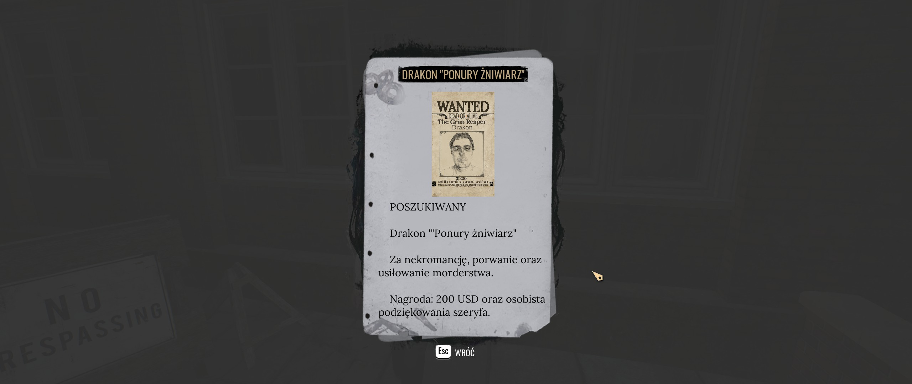
poszukiwany za nekromancję
artystycznie to się jakoś broni, pomimo tego że poprzednia część była bardziej rozbudowana i zniuansowana; jakieś tam minimum przekonujące wizualnie występuje; raz na jakiś czas pan watson będzie strzelał; pod koniec gry pływa się nawet łódką po mrocznych bagnach luizjany w nocy;
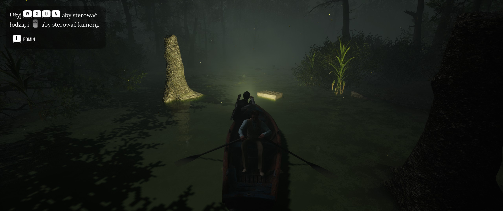
pływanie łódką po bagnach luizjany
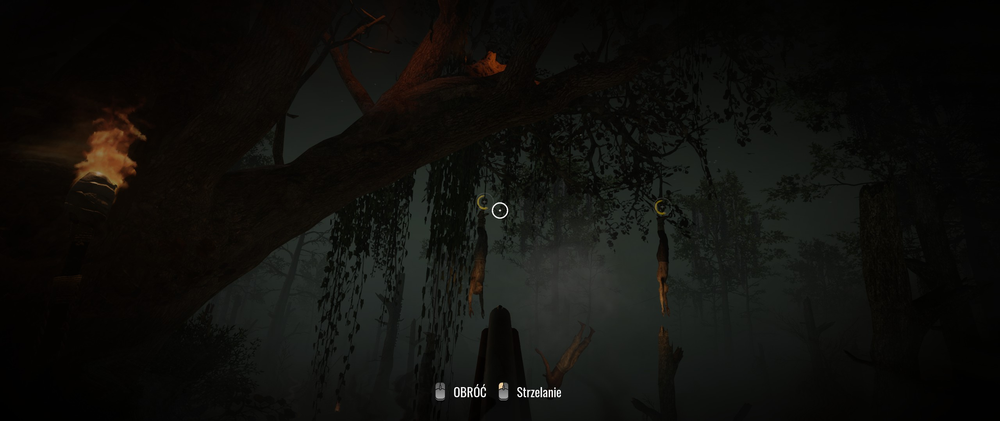
strzelanie w wykonaniu watsona – dwóch wisielców
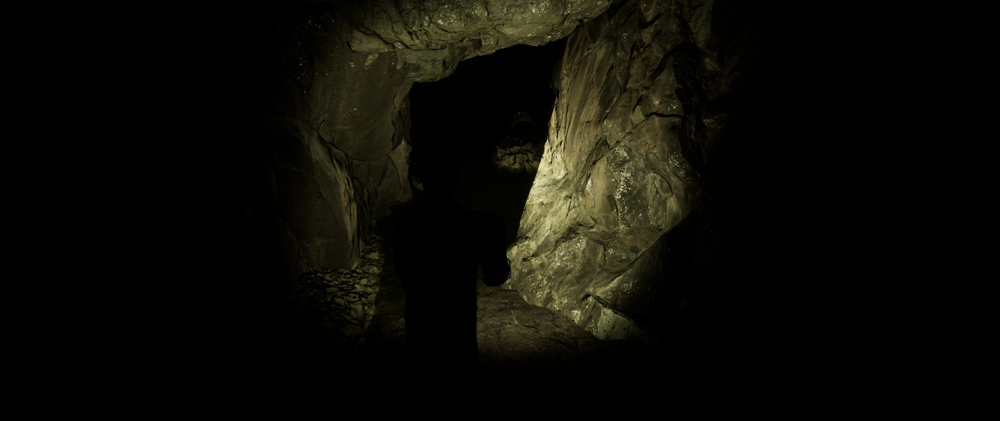
ciemnica w dusznej grocie
# rozgrywka
pałac pamięci jest nieco bardziej uporządkowany, bo podzielony na kategorie, lecz wszystkie poszlaki i materiały dowodowe prowadzą ostatecznie tylko do jednego rezultatu; regres w porównaniu nawet do „sherlock holmes: the devil's daughter”;
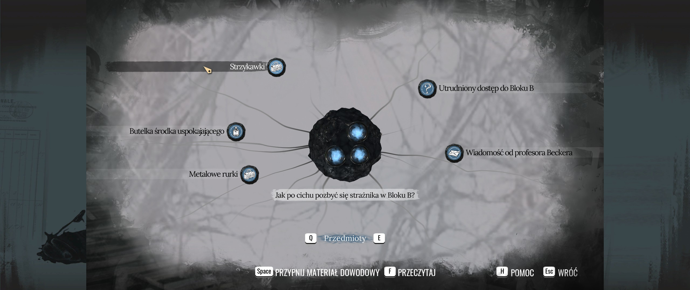
pytanie pałacu pamięci – dostępne poszlaki
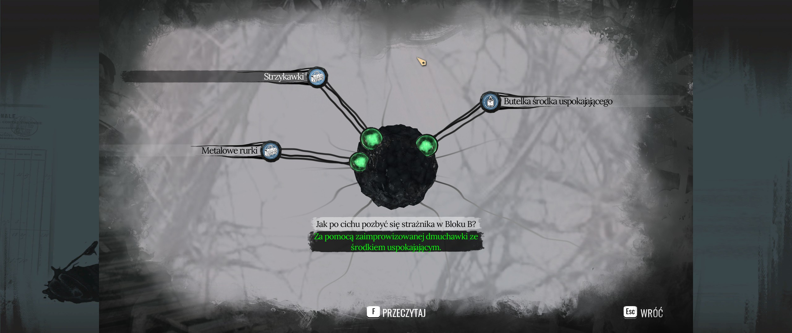
pytanie pałacu pamięci – jedyny możliwy rezultat
podczas portretowania pokazują się „motylki”, które wskazują na interesujące miejsca na ciele;
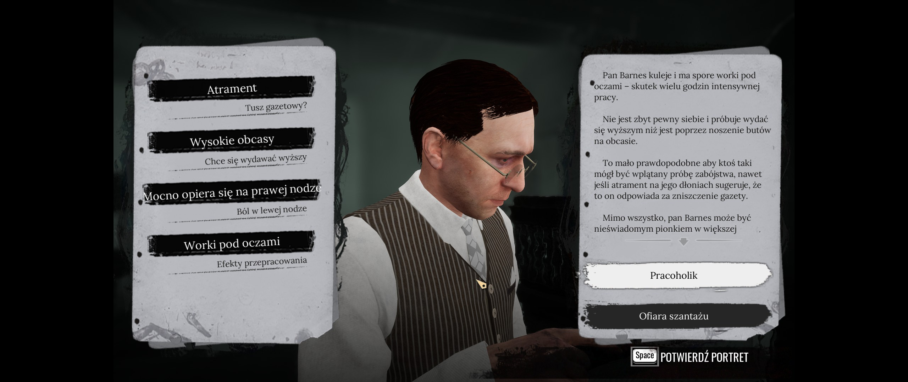
portret osobowościowy postaci
podczas dedukcji ciągu wydarzeń, gdy używamy skupienia, podświetlane jest niewłaściwe założenie co do całej sytuacji;
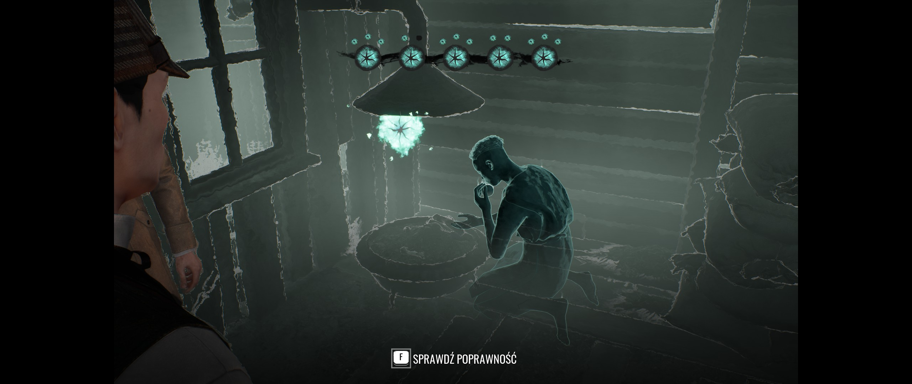
ciąg wydarzeń – poszlaki zebrane
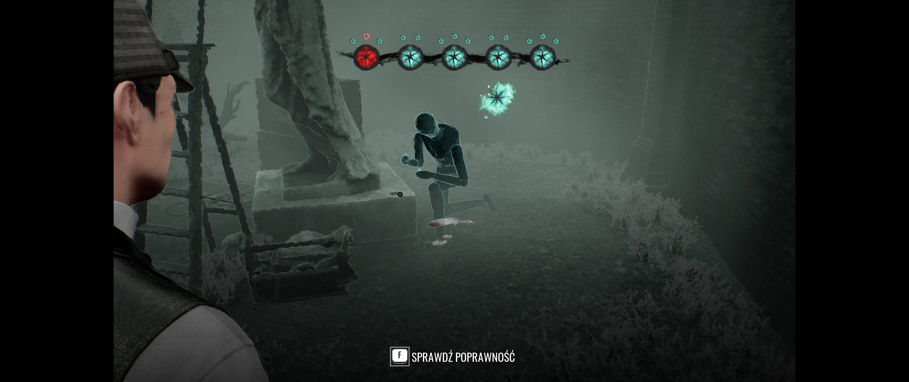
ciąg wydarzeń – podpowiedź o niepasującym wyborze
tym razem podczas konfrontacji pojawiają się zgoła bardziej pomocne pytania;
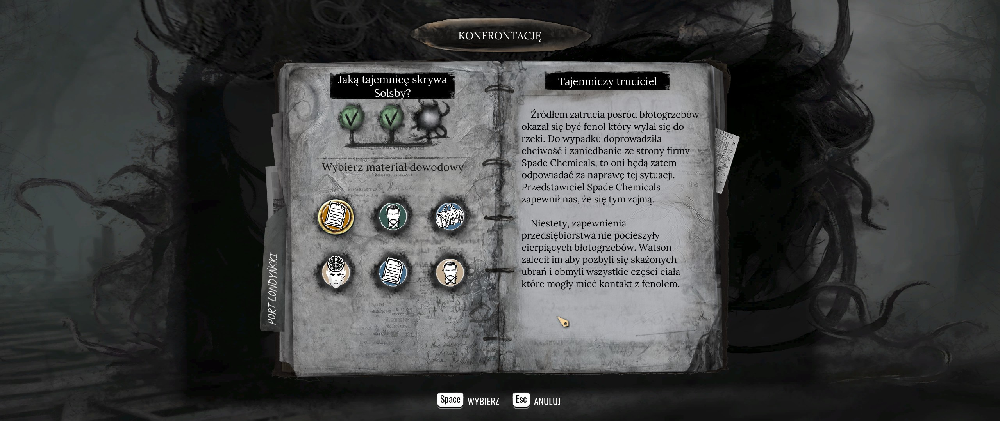
pytania konfrontacyjne
zdobywa się tutaj punkty doświadczenia, a za każdy kolejny poziom odblokowywuje się przebrania, które z kolei niczemu nie służą, są jedynie elementem kosmetycznym, aczkolwiek ubiór bywa zmieniany na mocy fabuły; dlatego też jest zastanawiającym po co komu dlc jedynie z tym, zwłaszcza że nie można się przebierać na ulicy;
pojawia się otwieranie zamków, bardzo proste acz zadowalające;
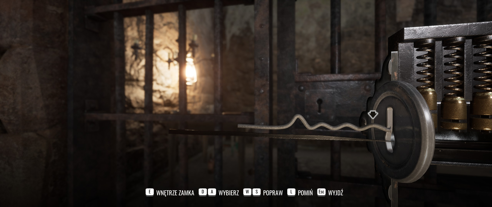
otwieranie zamków – kształt wytrycha
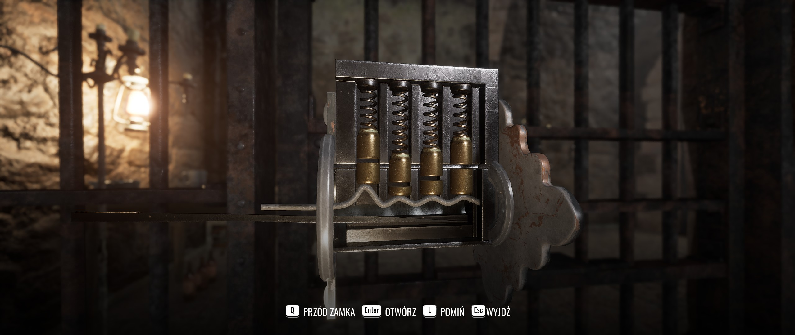
otwieranie zamków – dopasowanie wytrycha do zamka
rozmowy oferują opcje w postaci koła dialogowego, choć jest to raczej niepotrzebne skoro w większości przypadków mamy tylko dwie możliwości do wyboru;
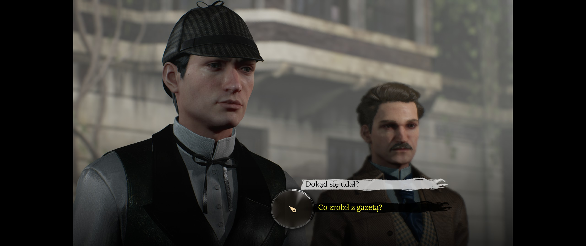
wybory dialogowe
istnieją fragmenty biegania johnem watsonem, jednak przełączanie się na niego gdy sherlock jest obok to raczej niepotrzebny element rozgrywki;
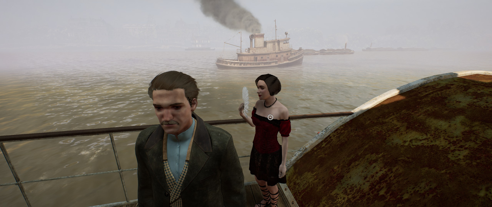
parostatkiem w piękny rejs
w tej części przeszukiwać kroniki można w menu śledztwa;
# mankamenty
pierwszym dostrzegalnym mankamentem jest brak obsługi rozdzielczości panoramicznych; na szczęście istnieje rozwiązanie, które działa nawet z poprzednią częścią;
wita nas całkiem sporo ekranów początkowych, w tym te o tworzeniu tej gry w dobie wojny na ukrainie, stąd modyfikacje które mają się tego pozbyć;
klatkaż można ograniczyć jedynie do 30 fps albo 60 fps;
na drzwi nadal się napiera, a nie je otwiera, przy czym nadal występuje ładowanie przy wchodzeniu do małych pomieszczeń takich jak bar;
w przypadku dokumentów i ogólnie czytania rzuca się w oczy wielka czcionka; nadal pojawiają się błędy w tłumaczeniu, przykładowo: „to funkcja która z którą nie radzą sobie”, „żyje i jest przewodzi”;
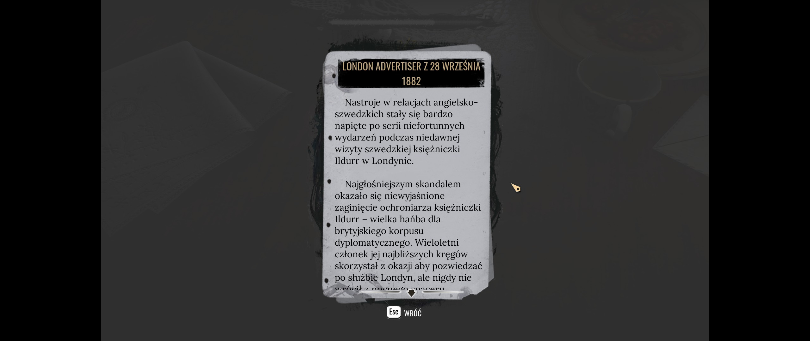
london advertiser z 28 września 1882 r. – wielka czcionka
lokacje zawalone są sztucznymi robotami drogowymi coby nie można było przejść, a co nieco rzuca się w oczy ze względu na kameralność samych miejsc; to oznacza również iż mapa jest bardziej poglądowa niż użyteczna; dodatkowo przejścia często są wąskie, a podążający za nami watson potrafi je blokować swą osobą;
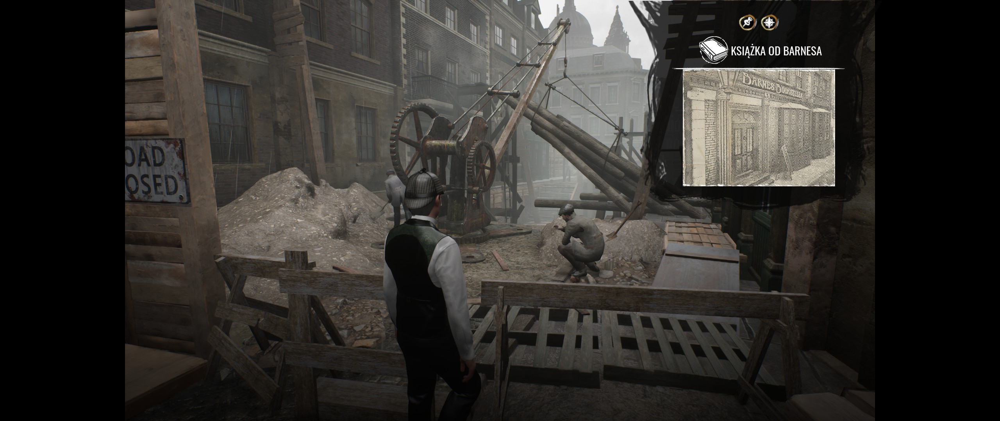
roboty drogowe
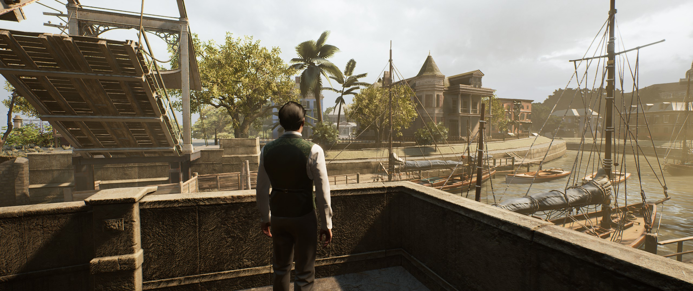
nowy orlean w oddali, niedostępnej do przemierzania
można się zaciąć w przechodzeniu tej gry; w moim przypadku obie takie sytuacje dotyczyły zagadek związanych z miejscem poza czasem i przestrzenią; rzecz w tym, że one trochę nie pasują do całości; najpierw przyzwyczajają do oczywistości, a potem każą być uważnym na otoczenie; najpierw trzeba uważać by nie zginąć, a potem celowo dać się zabić tyle że w określonych miejscach;
chapter 2, point of no return: “Approach the obelisk in the middle of the room and you will see it requires two rocks this time to open the door ahead of you. There are five doors to choose from, but only two of these will be helpful. The other three will simply lead to a corridor, with a door at the end which will bring you back to the main room.” — the call of the bayou walkthrough
chapter 6, the cave: “Now a bridge has been formed. If you try to cross it in the same area where the white circles are you will fall down. You need to come back to the previous area, the bridge will be invisible but it is there.” — walkthrough chapter 2
# zawartość a misje poboczne
jedyne istotne dlc nazywa się „the whispered dreams” (wyszeptane sny), które według mnie jest niewarte swej ceny; cała reszta to przebrania, które i tak są nieistotne;
zdobycie wszystkich osiągnięć za pierwszym przejściem gry jest proste, lecz wymaga zaznajomienia z ich listą, jako że niektóre z nich wymagają wybrania odpowiedniej opcji dialogowej; reszta jest raczej zwyczajowa: otwórz wszystkie zamki, zaglądaj w każdy kąt, itd.;
curiosity killed the cat
rouse evil from its slumber
chapter 2
3x interakcja ze statuą cthulhu w magazynie nr 12
let me be frank
pretend to be barnaby
chapter 4
„jestem frank barnaby”
no stone unturned
find all evidence at the cliffside crime scene
chapter 8
6 dowodów: zakrwawiona koszula, ciało ashmata, symbol na ścianie, zakrwawione miejsce, gałąź na ziemi, klucz pod skałą
reawakened
collect all achievements
Curiosity Killed The Cat: “At Warehouse 12 basement, where you investigate a ritual, a Cthulhu statue is present. Interact with it three time.”
Let Me Be Frank: “After you find The Gold Coin Bank, speak with a guard stood at the entrance. Choose "I am Frank Barnaby" line, when he asks about an invitation.”
No Stone Unturned: “There are six evidences which should be founded: Bloody shirt, Ashmat, Symbol on the wall, Blood spot, Branch on the ground, Key hidden by a rock”
No Stone Unturned: “Note that two interactable spots (Heavy Stone and Thick Bushes) will disappear as soon as you pick up Ashmat's Medallion, but they are not needed for the achievement.”
7z a -ttar \"$HOME/library/roboczy/sherlock holmes the awakened.tar" \"/run/media/$USER/games/SteamLibrary/steamapps/compatdata/1949030/pfx/drive_c/users/steamuser/AppData/Local/SH3RE"